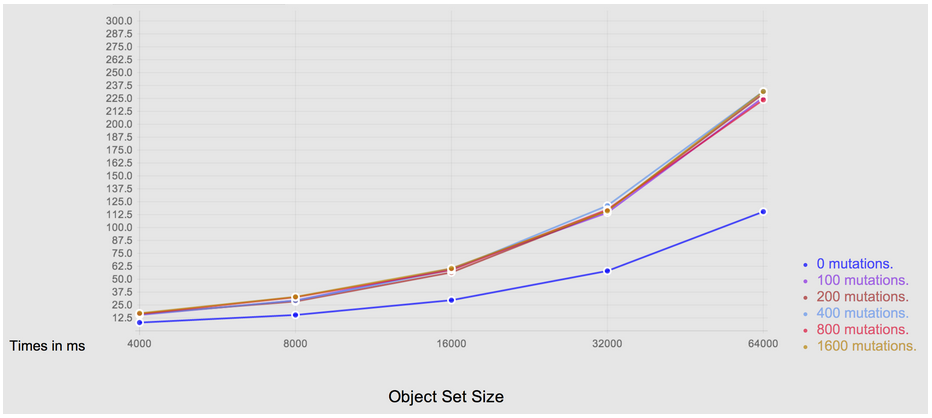
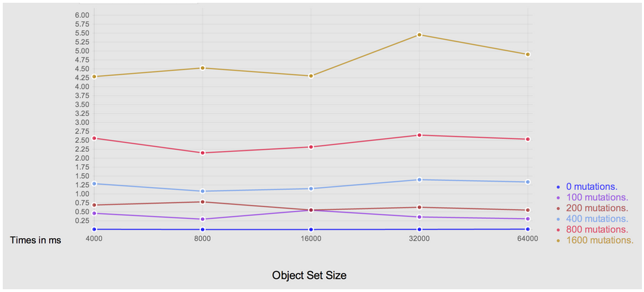
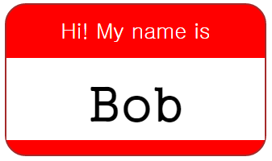

Web Technology Hot Issues
(To be) Presented in TechX 2015/03/04 @ Samsung SDS
나현익 (L4)
SDK 개발그룹, S-Core
Contents
- Web-App Now and Future
- Technical Issues
- Object.observe
- Web Components
- Custom Elements
- HTML Templates
- Shadow DOM
- HTML Imports
- Service Workers
- App Manifests
- Picture Elements & srcset Attribute
Web-App Now and Future
Now - Broadening Area
- You already use many Web-apps
- Gmail, Naver map, online malls, online banking
- Office-ware
- MS Office Online, Google Docs, Naver Office
- Photo editor
- Rich media
Web-App Now and Future
Now - Broadening Area
- 3D Graphics with WebGL
- Demo 1
- Demo 2
- Rome, a music video
- Chrome experiments
- Games
- Development
- Webida IDE, Cloud9, Codenvy
Web-App Now and Future
Future - Bright Side
- Pros of Web-apps
- No install
- Always up-to-date
- Compatible with every CPU and OS
- Accessible from anywhere if online
- Easy sharing: single copy on the server
- Free from some technical problems (e.g. desktop crash, data backups)
- Centralized security management
Web-App Now and Future
Future - Hurdles
- Cons (people say) of Web-apps
- Unavailable when offline
- Poor access to local resources (files, printers, scanners, etc)
- Poor performance
- But, (I think) the real problems are
- Premature apps and inertia
- Poor development environment
Technical Issues
- Object.observe
- Web Components
- Custom Elements
- HTML Templates
- Shadow DOM
- HTML Imports
- Service Workers
- App Manifests
- Picture Elements & srcset Attribute
Object.observe
Basic Concept
-
Native support for MVC
- Declares a callback to observe changes of an object
var model = {};
Object.observe(model, function (changes) {
changes.forEach(function (c) {
alert('\n name: ' + c.name +
'\n type: ' + c.type +
'\n old value: ' + c.oldValue +
'\n cur value: ' + c.object[c.name]);
});
});
Object.observe
Without O.o
- Floods of MVC frameworks.
- AnglularJS, Backbone.js, Ember.js, KnockoutJS, etc (cf. Todo MVC)
- No more JS frameworks, please ...
- Mostly, they are based on
- Container object (e.g. Ember.js): incompatible objects
- Dirty-checking (e.g. AngularJS): bad algorithmic behavior, or
Object.observe
Without O.o - Ember
var person= Ember.Object.create({
firstName: "Gildong",
lastName: "Hong",
fullName: function () {
return this.get("firstName") + this.get("lastName");
}.property("firstName", "lastName")
});
perseon.get("fullName"); // person.fullName
perseon.set("lastName", "Go"); // person.lastName = "Go"
Object.observe
Without O.o - AngularJS

Object.observe
With O.o

Technical Issues
- Object.observe
- Web Components
- Custom Elements
- HTML Templates
- Shadow DOM
- HTML Imports
- Service Workers
- App Manifests
- Picture Elements & srcset Attribute
Web Components
Why
- Limited vocabulary of HTML elements
- <div>, <p>, <input>, <a>, <img>, <h1>, <h2>, ...
- Chaotic mixture of contents and presentation in DOM trees (next page)
Web Components
What if ...?
tech-day
examples
ex1.html
ex2.html
slides
.git
css
images
dirty-checking.png
dom-tree.png
observe.png
js
lib
plugin
text
.gitignore
.travis.yml
Gruntfile.js
...
Web Components
Basic Concept
- Define reusable custom HTML elements (widgets)
- Presentation details are hidden at their use sites
- Base of Polymer
- Four pillars
- Custom Elements: Register new HTML element names to the browser
- HTML Templates: Define presentation layers of the elements
- Shadow DOM: Glue templates to the elements with encapsulation
- HTML Imports: Single definition and multiple uses
- Spec: WHATWG, W3C
- Supports: Chrome 36+, Opera 25+, Android 37+, Chrome for Android 38+ (ref. Can-I-Use)
Custom Elements @ Web Components
Basic Concept
- Register a new HTML element name (tag name) to a browser using document.registerElement()
var NameTag = document.registerElement('name-tag');
document.body.appendChild(new NameTag());
- document.registerElement(...) returns the constructor of the new element
- Element names must have a dash for forward compatibility
Custom Elements @ Web Components
Extending Another Element
- Can extend other element (default: HTMLElement)
document.registerElement('extended-button', {
prototype: Object.create(HTMLButtonElement.prototype)
});
Custom Elements @ Web Components
Lifecycle Callbacks
- createdCallback, attachedCallback, detachedCallback, attributeChangedCallback(attrName, oldVal, newVal)
- createdCallback is good to fill the contents of custom elements
HTML Templates @ Web Components
Basic Concept
- A new element <template>
- Hidden: Parsed but not rendered
- Inactivated: Scripts don't run, images don't load, audio doesn't play, etc

HTML Templates @ Web Components
How to Use
- Clone its content (tmpl.content, a DocumentFragment object)
and add the clone to the DOM
var tmpl = document.querySelector('#mytemplate');
var clone = document.importNode(tmpl.content, true); // true: deep clone
document.body.appendChild(clone);
Shadow DOM @ Web Components
Basic Concept
- Provides encapsulation for Web components
- Presentation details are kept in Shadow DOM and hidden at use sites
- Avoids name collision: IDs, class names, styling rules, etc
- Instead of shadow host's content, shadow root's content is rendered
Shadow DOM @ Web Components
Separating Presentation and Contents
- To-do: Creating a name tag

Shadow DOM @ Web Components
Separating Presentation and Contents
Hi! My name is
Bob
Shadow DOM @ Web Components
Separating Presentation and Contents
- Concentrate on true contents of name tags
- It is a name tag
- The name is 'Bob'
Shadow DOM @ Web Components
Separating Presentation and Contents
Bob
...
Bob
Shadow DOM @ Web Components
Separating Presentation and Contents
Bob
...
Shadow DOM @ Web Components
Separating Presentation and Contents
...
- <content> is a 'hole' in the presentation layer
- Host's content is prejected into the hole
Web Components
Putting Them Together
… same as Ex-14 …
HTML Imports @ Web Components
Single Definition and Multiple Uses
...
Bob
Mary
홍길동
Technical Issues
- Object.observe
- Web Components
- Custom Elements
- HTML Templates
- Shadow DOM
- HTML Imports
- Service Workers
- App Manifests
- Picture Elements & srcset Attribute
Service Workers
- Hooking HTTP Requests + Controllable Cache
- Hooks requests with URLs that match one of predefined URL prefixes
- Acts as a client side proxy, especially for offline usage
- Background processing while browser UI doesn't run
- e.g. handling server push messages and system alarms
- But, looks far from completion for this purpose
- Spec: W3C
- No browsers support yet. Partial support in Chrome 40
App Manifests
- JSON file providing information about a Web-app
- Name, author, icon, description, etc: To create a desktop icon
- Start URL, display, orientation, etc: To indicate how to launch
- The list of WebAPIs the app uses for browsers incorporating Web runtime
- For more familiar UX and native-like Web-apps
- Launching by double-clicking icons, not by bookmarks
- Accessing security-critical local resources: files, telephony, contacts, camera, power management, WiFi, Bluetooth, etc
- Spec: W3C
- Supports: Chrome 38+
App Manifests
{
"name": "My App",
"description": "My elevator pitch goes here",
"launch_path": "/index.html",
"icons": {
"512": "/img/icon-512.png",
"128": "/img/icon-128.png"
},
"developer": {
"name": "My Name",
"url": "http://my-homepage.org"
},
"default_locale": "en"
}
... ...
Picture Elements & srcset Attribute
Browser Support for Responsive Images

Picture Elements & srcset Attribute
Browser Support for Responsive Images
- Selects an image out of candidates based on ...
- Dimension
- Device pixel ratio
- Viewport proportion
- Image format
- Improves image loading performance
- Fetches only a matching or fall-back image
- Spec: WHATWG
- Supports: Chrome 38+, Opera 25+, Chrome for Android 38+
And Much More
- WebRTC
- WebGL
- Push API
- Polymer
- ...